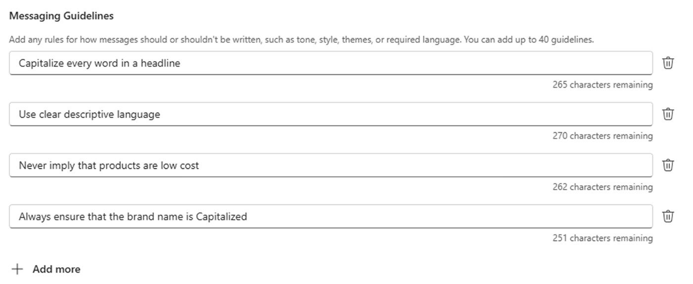

先核业务摘要，再看广告草稿
广告生成常见的问题不是不会写一句话，而是产品资料、品牌要求和营销计划分散在不同文件。Microsoft Advertising的新流程把网站与这些材料作为输入，先组织可编辑的业务摘要，再起草Performance Max活动。用户因此有机会在广告生成之前纠正产品定位或语气，而不是等十几条文案都写偏后逐条修。输出仍需要投放者编辑预算、出价、文案与素材，并决定何时上线。一个顺畅的生成过程不能证明报价、适用条件或产品承诺已经得到业务确认。
Microsoft Advertising · 产品更新 · 厂商公告与文档

广告生成常见的问题不是不会写一句话，而是产品资料、品牌要求和营销计划分散在不同文件。Microsoft Advertising的新流程把网站与这些材料作为输入，先组织可编辑的业务摘要，再起草Performance Max活动。用户因此有机会在广告生成之前纠正产品定位或语气，而不是等十几条文案都写偏后逐条修。输出仍需要投放者编辑预算、出价、文案与素材，并决定何时上线。一个顺畅的生成过程不能证明报价、适用条件或产品承诺已经得到业务确认。
Messaging guidelines开放试点提供最多四十条规则，可写不该出现的主题、说法与语气，也可以给正向指导。官方界面直接展示规则列表，适合把“不要暗示低价”“品牌名保持指定写法”这类反复纠正的要求留在生成入口。规则能减少每次重新解释，但它们之间也可能冲突：强调紧迫感与禁止夸大承诺需要具体协调，不能交给一句模糊的“符合品牌”。产品经理应让规则对应可辨认的文案变化，保留能判断业务真实性的人，而不是把条目数量当作控制程度。
Conversions API的GA提供服务器侧回传路径，但接入文档把多项工作留给实施者：配置标签和认证，确定事件名称、标识及目标，并处理同意。与网页UET同时使用时，同一动作需要匹配稳定的事件标识等字段来去重，否则一次购买可能被记录两遍。来自CRM或线下系统的记录还需要解释它对应哪个用户动作。这样的数据工程不会因为生成广告更容易而消失；它决定了后续优化看到的是实际业务结果，还是重复、缺失或时间错位的信号。
十月更新同时出现GA、开放试点和未来功能，采购或实施不能只记住一条新闻标题。例如设备控制与后续报告有各自推出安排，部分Conversions API合作接入仍是早期访问或即将推出。直接API路线可用也不等于现有CRM已经有一键连接。对小团队，先保存业务摘要、少量明确品牌规则和准确转化事件，比同时开启所有选项更容易管理；已有成熟代理或脚本的团队，则要比较重复录入与调整成本。公开材料没有给出本刊可复核的投放提升，因此不能将这些控制直接换算成更高转化率。业务摘要更改之后，相关广告素材是否都采用新条件也值得逐项确认，尤其是优惠截止日期和适用产品范围。